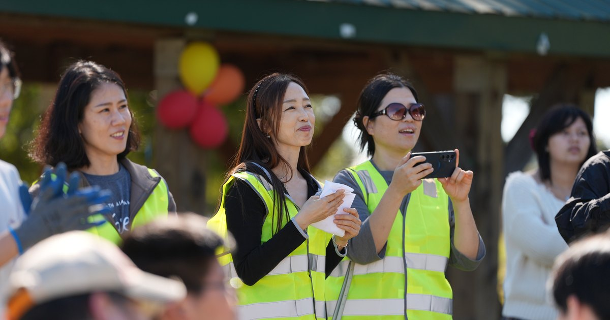

지난 10월 24일 토요일, 북알라바마한국학교가 헌츠빌 브레이핸 스프링 공원에서 2026년 가을 운동회를 열었습니다. 오전 10시, 1번 파빌리온 앞 잔디밭에 학생과 교사, 학부모가 모이면서 하루가 시작되었습니다.
가을 운동회는 토요일마다 이어지던 교실 수업을 잠시 멈추고 학교 전체가 한곳에 모이는 연례 행사입니다. 학생들은 학년과 반을 넘어 함께 뛰고, 평소 교실에서는 만나기 어려운 친구들과 같은 편이 되어 하루를 보냅니다.
청팀과 백팀, 반을 섞어 한 팀으로
이날 학생들은 청팀과 백팀으로 나뉘었습니다. 반별로 팀을 가르는 대신 각 반을 반씩 나누어 섞었기 때문에, 서로 다른 학년의 학생들이 한 팀 안에서 만나 함께 경기를 치렀습니다. 형제자매는 같은 팀으로 묶였고, 모든 경기의 점수는 운동장 한쪽에 세워 둔 점수판 하나에 기록되었습니다.
공 전달하기부터 줄다리기까지
개회와 다 함께하는 체조로 하루를 연 뒤 본격적인 경기가 시작되었습니다. 학생들은 머리 위로 공 전달하기로 몸을 풀었고, 이어달리기에서 두 팀이 처음으로 맞붙었습니다.
이어서 학생들은 준비된 경기를 차례로 돌며 참여했습니다. 2인 3각에서는 두 학생이 서로를 붙잡고 발을 맞추어 결승선을 향했고, 풍선 터뜨리기 릴레이에서는 달려 나가 풍선을 터뜨리고 돌아오는 구간이 이어졌습니다. 혼자서는 빠른 학생도 둘이 함께 달릴 때에는 상대의 걸음에 자신의 걸음을 맞추어야 했습니다.
이날 가장 큰 환호가 터져 나온 경기는 줄다리기였습니다. 학생들의 차례가 끝난 뒤에는 학부모들도 줄을 잡았고, 고학년 학생과 학부모가 함께 줄을 당기는 동안 줄 양쪽 끝에서 응원 소리가 끊이지 않았습니다.


학부모협회와 교사가 함께 만든 하루
이번 운동회는 학부모협회가 운영을 맡아 준비했습니다. 교사들은 전원 참석해 학생 도우미와 함께 각 경기를 진행했고, 안전 조끼를 입은 자원봉사자들이 경기장 둘레에서 순서를 안내하고 학생들을 챙겼습니다.

50점 차로 갈린 승부
정오 무렵 점수판에 적힌 최종 점수는 청팀 2000점, 백팀 1950점이었습니다. 50점 차로 청팀이 우승했습니다. 시상식에서는 학생들에게 메달과 트로피가 전달되었고, 학생과 교사, 학부모가 파빌리온 앞에 모여 단체 사진을 찍는 것으로 하루를 마무리했습니다.

운동회는 한 해 가운데 학교 전체가 교실 밖에서 가장 오래 함께 보내는 시간입니다. 같은 반이 아니어서 평소 이야기를 나눌 일이 드물던 학생들이 이날은 한 팀으로 묶여 같은 편에서 뛰었습니다. 이날 운동장에서 나눈 즐거움이 앞으로의 토요일 교실에도 자연스럽게 이어지기를 기대합니다.
앞으로도 북알라바마한국학교는 학생들이 한국어와 한국 문화를 교실 안에서뿐만 아니라 함께 뛰고 웃으며 배울 수 있는 자리를 꾸준히 만들어 가겠습니다.
사진 · Gabriel Lockwood